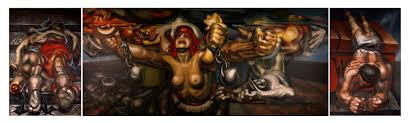
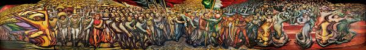
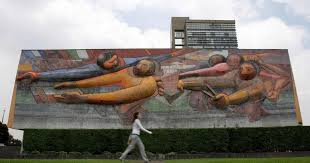
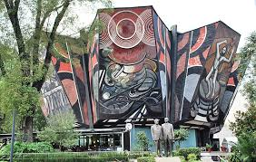
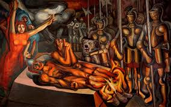

Retrato de la Burguería fue elaborado para decorar el Sindicato Mexicano de Electricistas, durante una etapa que coincide con su activismo antifascista. Es esta intención o denuncia al orden fascista y capitalista lo que se recoge en el mural.

Tríptico La nueva democracia (1945)
Probablemente, el tríptico La nueva democracia, exhibido en el Palacio de Bellas Artes, sea la obra más conocida del pintor. El panel central es flanqueado a la izquierda por la escena Víctimas de la guerra y, a la derecha, por Víctimas del fascismo. La obra fue ejecutada sobre un muro exento. En ella, Siqueiros usó la poliangularidad para aprovechar los diferentes ángulos de visión dentro del recinto.

Del porfirismo a la revolución (1957-1966)
Del porfirismo a la revolución fue un encargo para el Museo Nacional de Historia. Se trata de una obra que ocupa todas las paredes del espacio con diversas escenas del recorrido histórico en cuestión. Predomina, por lo tanto, el carácter narrativo sobre el carácter simbólico.

El pueblo a la Universidad, la Universidad al pueblo (1956)
CEl nombre completo de este mural es El pueblo a la Universidad, la Universidad al pueblo. Por una cultura nacional neohumanista de profundidad universal. Fue elaborado entre los años 1952 y 1956 para la Universidad Autónoma de México. Esta obra marca un hito importante, debido al magnífico desarrollo de una técnica revolucionaria: el escultomural. La obra es apenas una de las tres fachadas intervenidas por Siqueiros, entre las que se cuentan El derecho a la cultura y Nuevo símbolo universitario.

La marcha de la humanidad (Polyforum Siqueiros, 1965-1971)
El conjunto mural del Polyforum Siqueiros es la obra cumbre de este muralista mexicano. La suma total de las superficies intervenidas por el pintor, tanto interiores como exteriores, hace de La marcha de la humanidad la obra mural más grande del mundo. En tal sentido, representa un esfuerzo análogo al de la Capilla sixtina de Miguel Ángel. Expresa la convicción política de Siqueiros sobre la marcha de la humanidad hacia la libertad plena.

Las características de la obra de David Alfaro Siqueiros pueden resumirse de la siguiente manera:
Preferencia por el mural.
Monumentalidad.
Ruptura de la geometría estática.
Dinamismo y movimiento.
Poliangularidad. Conjunción de diversos planos y tamaños en una sola obra para crear mejores vistas según el ángulo visual.
Uso de primeros planos.
Definición de la óptica
Escorzo como elemento plástico-expresivo.
Desarrollo agresivo del volumen y el trazo.
Tendencia al Horror vacui o superficies recargadas.